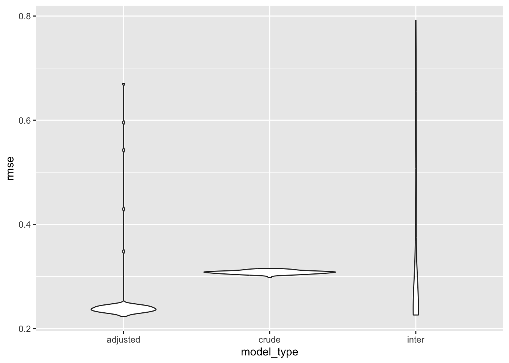
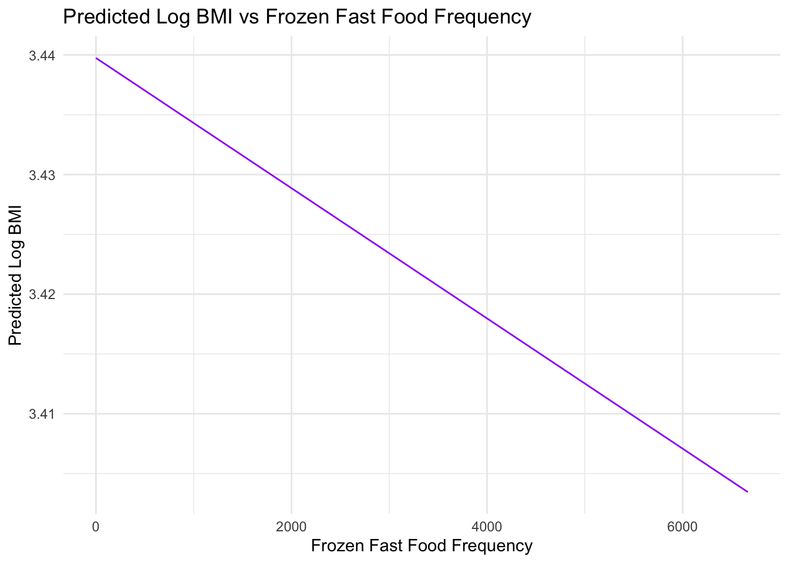

Final report
“Multifaceted Analysis of Obesity: Exploring the Interplay of Diet, Sedentary Lifestyle, and Socio-Demographic Factors in the United States from 2017-2020”
Motivation
The increasing prevalence of obesity cases in the United States is becoming a serious public health issue and bringing up lots of adverse comorbidities. The problem that comes with obesity exists not just on an individual level but is more troublesome as it can lead to substantial effects on the overall healthcare system’s performance and affect economies across the country. When we talk about obesity nowadays, we can not stop thinking of the burden that associated with it. According to a National Survey published by Forbes Health, between 2017 and 2020, around 41.9% of adults in the United States were obese1. With almost half of the adults being obese, Obesity was considered a national epidemic. Concerns like chronic diseases, type 2 diabetes, cardiovascular conditions, and certain forms of cancer, that are linked with obesity, can easily lead to heightened mortality rates and diminished quality of life. The causes of obesity are diverse and complex2, involving genetics, societal, and environmental factors but addressing this public health problem and educating the importance of personal wellness among the obese population in the U.S. is in urgent need.
Data
Data Source
Description. The 2017–March 2020 Pre-Pandemic Data Files for this study are sourced from the National Health and Nutrition Examination Survey (NHANES), which is an ongoing series of studies designed to assess the health and nutritional status of the civilian noninstitutionalized U.S. population. The NHANES data collection involves interviews and physical examinations, covering a wide range of health and nutrition-related topics. The data is critical for the assessment of public health and nutrition and aids in the development of health policies and research. Special weighting measures have been applied to the combined dataset to ensure that it reflects the population and health trends accurately for nationally representative estimates.
Data Collection Methodology
Primary Sampling Units (PSUs). The survey utilizes a multistage probabilistic sampling design. In the first stage, PSUs are selected based on stratification by various health and demographic characteristics. Each PSU is typically a county or a group of contiguous counties.
Stratification. States are categorized into health groups according to health index values. PSUs are further divided into major strata within each health group, which are determined by the urban-rural population distribution and other locality characteristics.
Sampling Periods. The 2017-2018 and 2019-March 2020 cycles were based on different 4-year sample designs, with PSUs selected annually from their respective strata.
Representativeness. The 2017-March 2020 pre-pandemic data file includes PSUs from the 2017-2018 cycle and 2019-March 2020 data collection. The combined dataset was calibrated to ensure national representativeness according to the 2015-2018 sample design, accounting for changes in population size and other characteristics that determine major stratum membership.
Data Cleaning
We first import three files by creating the data import function
(import_df) that reads the data from an .XPT file format. The four
datasets that were merged were: Demographic Variables and Sample Weights
(P_DEMO), Body Measures (P_BMX), Physical Activity (P_PAQ) andDiet
Behavior & Nutrition (P_DBQ). Using a full join on the ‘SEQN’ column
to merge the datasets. Then, we select the specific column that are
meaningful in the process of analysis: SEQN,
RIAGENDR, RIDAGEYR, DMDMARTZ,
INDFMPIR, RIDRETH3, DMDEDUC2,
PAD680, BMXBMI, DBD900, and
DBD910.
Next, we did the data filtering by filtering out specific values from various column (e.g., ‘77’, ‘99’, ‘.’, ‘7777’, ‘9999’). This step removed the missing, unknown, and null value from the dataset and only kept those meaningful values in the dataset.
Furthermore, we rename the columns to more descriptive names like ‘gender’, ‘age’, ‘marital_status’, etc. After this step, we use the mutate function to transform and categorize several columns: gender: Categorizing and converting to a factor.
marital_status, race, education: Categorizing different demographic
details. obese: Creating a new variable based on BMI, categorizing
individuals as normal or obese.
The variables in the Final dataset are listed below:
SEQN : Respondent sequence number gender:
Female or male age: Age in years at screening
marital_status: never married, married,
widowed/divorced/separated income_to_poverty: ratio of
family income to poverty race: Mexican American, White,
Black, Other Hispanic bmi: Body Mass Index (kg/m**2)
freq_fast_food: number of meals from fast food or pizza
place freq_frozen: Numbers of frozen meals/pizza in past 30
days sedentary_activity: Minutes sedentary activity
obese: normal, obese
The process effectively cleans and transforms the data, preparing it for analysis related to obesity. The use of case_match and case_when for categorizing data is particularly efficient, as it allows for more readable and interpretable data. This structured approach ensures the dataset is clean, well-organized, and ready for further statistical analysis or visualization.
Exploratory Analysis
obesity_race_filtered = obesity |>
filter(!is.na(race) & race != "NA")
ggplot(obesity_race_filtered, aes(x = race, fill = gender)) +
geom_bar(position = "dodge") +
scale_fill_manual(values = c("pink", "lightblue")) +
labs(title = "Obesity Prevalence by Race and Gender",
x = "Race",
y = "Count") +
theme_minimal() Interpretation: The bar chart displays the prevalence of obesity across
different racial categories, differentiated by gender. It shows that the
White population has the highest count of obesity cases, with a notable
number of cases in both genders. The Black population follows, with
females being higher than males, whereas the “Other Hispanic” categories
have the lowest count of obesity cases.
Interpretation: The bar chart displays the prevalence of obesity across
different racial categories, differentiated by gender. It shows that the
White population has the highest count of obesity cases, with a notable
number of cases in both genders. The Black population follows, with
females being higher than males, whereas the “Other Hispanic” categories
have the lowest count of obesity cases.
ggplot(subset(obesity, bmi == "obese"), aes(x = age)) +
geom_histogram(binwidth = 1, fill = "pink", color = "lightblue") +
labs(title = "Age Distribution Among Obese Individuals",
x = "Age",
y = "Count") +
theme_minimal() Interpretation: The histogram indicates that obesity is present across
all age groups, with a relatively uniform distribution from young
adulthood to late middle age. There’s a significant peak in obesity
cases among individuals in their late 50s to early 60s. After this peak,
the number of obese individuals declines sharply for those in the older
age groups.
Interpretation: The histogram indicates that obesity is present across
all age groups, with a relatively uniform distribution from young
adulthood to late middle age. There’s a significant peak in obesity
cases among individuals in their late 50s to early 60s. After this peak,
the number of obese individuals declines sharply for those in the older
age groups.
ggplot(subset(obesity, bmi == "obese"), aes(y = income_to_poverty, x = "", fill = bmi)) +
geom_boxplot() +
scale_fill_manual(values = c("pink")) +
labs(title = "Income to Poverty Ratio Among Obese Individuals",
x = "",
y = "Income to Poverty Ratio") +
theme_minimal() Interpretation: The box plot shows the distribution of the income to
poverty ratio among obese individuals. The data is spread across a range
of ratios, mostly concentrated between 1 and 4, with the median around
2. This suggests that individuals with obesity come from a range of
economic backgrounds, but there’s a tendency towards lower income to
poverty ratios.
Interpretation: The box plot shows the distribution of the income to
poverty ratio among obese individuals. The data is spread across a range
of ratios, mostly concentrated between 1 and 4, with the median around
2. This suggests that individuals with obesity come from a range of
economic backgrounds, but there’s a tendency towards lower income to
poverty ratios.
obesity_sedentary_activity_filtered = obesity |>
filter(!is.na(sedentary_activity))
ggplot(obesity_sedentary_activity_filtered, aes(x = sedentary_activity)) +
geom_histogram(binwidth = 1, fill = "pink", color = "lightblue") +
labs(title = "Sedentary Activity Distribution Among Obese Individuals",
x = "Sedentary Activity",
y = "Count") +
theme_minimal() The majority of obese individuals report sedentary activity levels
between 0 to around 500 minutes, with frequency decreasing as the amount
of sedentary activity increases. There are notable peaks at certain
intervals which may indicate common reporting increments (～250
minutes). Very few individuals report very high levels of sedentary
activity, as seen by the low counts past 1000 minutes.
The majority of obese individuals report sedentary activity levels
between 0 to around 500 minutes, with frequency decreasing as the amount
of sedentary activity increases. There are notable peaks at certain
intervals which may indicate common reporting increments (～250
minutes). Very few individuals report very high levels of sedentary
activity, as seen by the low counts past 1000 minutes.
baseline Analysis
gender_summary <- obesity %>%
count(gender) %>%
mutate(Percentage = n / sum(n) * 100)
kable(gender_summary, format = "markdown", caption = "Gender Summary")| gender | n | Percentage |
|---|---|---|
| Female | 5800 | 50.9308 |
| Male | 5588 | 49.0692 |
marital_status_summary <- obesity %>%
count(marital_status) %>%
mutate(Percentage = n / sum(n) * 100)
kable(marital_status_summary, format = "markdown", caption = "Marital Status Summary")| marital_status | n | Percentage |
|---|---|---|
| Married | 4216 | 37.02143 |
| Never married | 1360 | 11.94240 |
| Widowed/Divorced/Separated | 1599 | 14.04110 |
| NA | 4213 | 36.99508 |
age_summary <- obesity %>%
summarise(
Count = n(),
Unique = n_distinct(age),
Mean = mean(age, na.rm = TRUE),
Std_Dev = sd(age, na.rm = TRUE),
Min = min(age, na.rm = TRUE),
`25th_Pctl` = quantile(age, 0.25, na.rm = TRUE),
Median = median(age, na.rm = TRUE),
`75th_Pctl` = quantile(age, 0.75, na.rm = TRUE),
Max = max(age, na.rm = TRUE)
)
kable(age_summary, format = "markdown", caption = "Age Summary")| Count | Unique | Mean | Std_Dev | Min | 25th_Pctl | Median | 75th_Pctl | Max |
|---|---|---|---|---|---|---|---|---|
| 11388 | 79 | 35.62302 | 24.24121 | 2 | 13 | 33 | 57 | 80 |
In our study, we found a near-equal distribution of obesity across genders, with varying prevalence across different marital statuses and a wide age range.
income_to_poverty_summary <- obesity %>%
summarise(
Count = n(),
Unique = n_distinct(income_to_poverty),
Mean = mean(income_to_poverty, na.rm = TRUE),
Std_Dev = sd(income_to_poverty, na.rm = TRUE),
Min = min(income_to_poverty, na.rm = TRUE),
`25th_Pctl` = quantile(income_to_poverty, 0.25, na.rm = TRUE),
Median = median(income_to_poverty, na.rm = TRUE),
`75th_Pctl` = quantile(income_to_poverty, 0.75, na.rm = TRUE),
Max = max(income_to_poverty, na.rm = TRUE)
)
kable(income_to_poverty_summary, format = "markdown", caption = "Income to Poverty Summary")| Count | Unique | Mean | Std_Dev | Min | 25th_Pctl | Median | 75th_Pctl | Max |
|---|---|---|---|---|---|---|---|---|
| 11388 | 472 | 2.42299 | 1.62789 | 0 | 1.04 | 1.99 | 3.9025 | 5 |
education_summary <- obesity %>%
count(education) %>%
mutate(Percentage = n / sum(n) * 100)
kable(education_summary, format = "markdown", caption = "Education Summary")| education | n | Percentage |
|---|---|---|
| 9-11th grade | 763 | 6.700035 |
| High school graduate | 1722 | 15.121180 |
| Less than 9th grade | 475 | 4.171057 |
| Some college or AA degree | 2406 | 21.127503 |
| NA | 6022 | 52.880225 |
race_summary <- obesity %>%
count(race) %>%
mutate(Percentage = n / sum(n) * 100)
kable(race_summary, format = "markdown", caption = "Race Summary")| race | n | Percentage |
|---|---|---|
| Black | 2970 | 26.080084 |
| Mexican American | 1397 | 12.267299 |
| Other | 1217 | 10.686688 |
| Other Hispanic | 1050 | 9.220232 |
| White | 3995 | 35.080787 |
| NA | 759 | 6.664910 |
The economic and educational backgrounds of our study group varied, with significant representation across different races.”
| Count | Mean | Std_Dev | Min | 25th_Pctl | Median | 75th_Pctl | Max |
|---|---|---|---|---|---|---|---|
| 11388 | 338.351 | 202.96 | 0 | 180 | 300 | 480 | 1320 |
bmi_summary <- obesity %>%
count(bmi) %>%
mutate(Percentage = n / sum(n) * 100) %>%
ungroup()
kable(bmi_summary, format = "markdown", caption = "BMI Summary")| bmi | n | Percentage |
|---|---|---|
| normal | 7922 | 69.56445 |
| obese | 3466 | 30.43555 |
Sedentary activity averages around 338 minutes, and approximately 30% of our study population is categorized as obese.
# Create age groups
obesity <- obesity %>%
mutate(age_group = case_when(
age >= 18 & age <= 25 ~ "18-25",
age > 25 & age <= 35 ~ "26-35",
age > 35 & age <= 45 ~ "36-45",
age > 45 & age <= 55 ~ "46-55",
age > 55 & age <= 65 ~ "56-65",
age > 65 ~ "66+",
TRUE ~ "Unknown"
))
fast_food_summary <- obesity %>%
group_by(gender, age_group) %>%
summarise(Avg_Fast_Food = mean(freq_fast_food, na.rm = TRUE))## `summarise()` has grouped output by 'gender'. You can override
## using the `.groups` argument.kable(fast_food_summary, format = "markdown", caption = "Fast Food Frequency Summary by Age Group and Gender")| gender | age_group | Avg_Fast_Food |
|---|---|---|
| Female | 18-25 | 15.024719 |
| Female | 26-35 | 2.330855 |
| Female | 36-45 | 2.029762 |
| Female | 46-55 | 2.000000 |
| Female | 56-65 | 1.620079 |
| Female | 66+ | 1.125214 |
| Female | Unknown | 1.794655 |
| Male | 18-25 | 2.997696 |
| Male | 26-35 | 2.915767 |
| Male | 36-45 | 2.457589 |
| Male | 46-55 | 2.215190 |
| Male | 56-65 | 2.247582 |
| Male | 66+ | 1.482982 |
| Male | Unknown | 1.894737 |
Our analysis of fast food consumption by age and gender shows that younger females and males aged 18-25 report the highest average frequency, with a general decline in older age groups.
# Summarize by gender and age group
frozen_food_summary <- obesity %>%
group_by(gender, age_group) %>%
summarise(Avg_Frozen_Food = mean(freq_frozen, na.rm = TRUE)) ## `summarise()` has grouped output by 'gender'. You can override
## using the `.groups` argument.kable(frozen_food_summary, format = "markdown", caption = "Frozen Food Frequency Summary by Age Group and Gender")| gender | age_group | Avg_Frozen_Food |
|---|---|---|
| Female | 18-25 | 2.543260 |
| Female | 26-35 | 2.370732 |
| Female | 36-45 | 2.268489 |
| Female | 46-55 | 1.764228 |
| Female | 56-65 | 1.976257 |
| Female | 66+ | 1.856436 |
| Female | Unknown | 6.257710 |
| Male | 18-25 | 17.747917 |
| Male | 26-35 | 15.932170 |
| Male | 36-45 | 15.051625 |
| Male | 46-55 | 2.060449 |
| Male | 56-65 | 2.177396 |
| Male | 66+ | 2.253538 |
| Male | Unknown | 17.288692 |
Similarly, for frozen food, the highest consumption is noted in younger males, with a notable decrease in older age groups.
# Histogram for BMI
ggplot(obesity, aes(x = bmi)) +
geom_histogram(binwidth = 1, fill = "blue", color = "black") +
labs(title = "Distribution of BMI", x = "BMI", y = "Count") +
theme_minimal()
# Density plot for BMI
ggplot(obesity, aes(x = bmi)) +
geom_density(fill = "blue", alpha = 0.5) +
labs(title = "Density Plot for BMI", x = "BMI", y = "Density") +
theme_minimal()
# Boxplot for BMI
ggplot(obesity, aes(y = bmi, x = 1)) +
geom_boxplot(fill = "blue", alpha = 0.5) +
labs(title = "Boxplot for BMI", x = "", y = "BMI") +
theme_minimal() The histogram and density plot indicate that the distribution of
The histogram and density plot indicate that the distribution of
BMI is right-skewed, which is a common observation in
health-related data.
When the response variable in a regression model, BMI, in our case, is not normally distributed, we took a common approach is to apply a transformation to achieve normality. The logarithmic transformation is particularly useful because it is a monotonic transformation that can handle positive skewness by compressing the long tail and expanding the lower end of the distribution. This can make the distribution more symmetric and more closely approximate the normal distribution, which meets the assumptions of linear regression.
By transforming BMI using the natural logarithm, we can
stabilize the variance (homoscedasticity) and make the relationship
between the predictors and the response variable more linear. This is
beneficial because linear regression assumes a linear relationship
between the predictors and the outcome variable. # Statistical
Analysis
cv_results |>
select(starts_with("rmse")) |>
pivot_longer(
everything(),
names_to = "model_type",
values_to = "rmse",
names_prefix = "rmse_"
) |>
group_by(model_type) |>
summarize(m_rmse = mean(rmse))## # A tibble: 3 × 2
## model_type m_rmse
## <chr> <dbl>
## 1 fast_adjusted 0.320
## 2 fast_crude 0.477
## 3 fast_inter 0.363cv_results |>
select(starts_with("rmse")) |>
pivot_longer(
everything(),
names_to = "model_type",
values_to = "rmse",
names_prefix = "rmse_"
) |>
ggplot(aes(x = model_type, y = rmse)) +
geom_violin() Analysis of the relationship between fast food consumption and BMI:
First, we used the crossv_mc function to create 100 Monte Carlo
cross-validation splits of the obesity dataset. This approach helps in
assessing the model’s performance more robustly by training and testing
it on different subsets of the data. Then, we constructed three
different models including a fast-food variable as the predictor and
log(bmi) as the outcome for each training set to decide which model was
best fit.
Analysis of the relationship between fast food consumption and BMI:
First, we used the crossv_mc function to create 100 Monte Carlo
cross-validation splits of the obesity dataset. This approach helps in
assessing the model’s performance more robustly by training and testing
it on different subsets of the data. Then, we constructed three
different models including a fast-food variable as the predictor and
log(bmi) as the outcome for each training set to decide which model was
best fit.
Three models are listed below model_fast_crude: A simple linear regression model with log(bmi) as the response variable and freq_fast_food as the predictor. model_fast_adjusted: An adjusted linear regression model including freq_fast_food and other covariates like age, gender, marital status, race, education, and income_to_poverty. model_fast_inter: An interaction model considering interactions between freq_fast_food and variables such as education and income_to_poverty, along with the main effects of these predictors.
Model Performance Evaluation
After the computation of the RMSE for each model on their test dataset, the violin plot was made for visualization purposes. This plot helps in comparing the distribution of RMSEs across the model. Furthermore, we look at the summary of the Best-Fitting Model. We extracted and printed the summary of the adjusted model, which is the best model from the previous step. This summary includes beta coefficients and p-values. Then, we do the residual analysis for the adjusted Model. A plot of residuals versus fitted values for the best_model_fast (adjusted model) was created. This plot is crucial for diagnosing model fit, as it helps in identifying patterns in the residuals that might suggest problems with the model, such as non-linearity or heteroscedasticity.
fast_adjusted model has a lower median with most of its
data concentrated at the lower end of the rmse scale, which suggests
better predictive performance for most of its predictions compared to
the other models. The model fast_adjusted seems to be the
best model overall due to its concentration of lower rmse values,
although fast_inter may also perform similarly well for the
majority of predictions but has some predictions with high error.
Best-Fitting Model Analysis
best_adjusted_model_summary <- cv_results$model_fast_adjusted[[1]] %>% summary()
# Print the summary which includes coefficients, R-squared, p-values...
print(best_adjusted_model_summary)##
## Call:
## lm(formula = log(bmi) ~ freq_fast_food + age + gender + marital_status +
## race + education + income_to_poverty, data = df)
##
## Residuals:
## Min 1Q Median 3Q Max
## -0.72949 -0.15992 -0.01134 0.15076 0.93870
##
## Coefficients:
## Estimate Std. Error t value Pr(>|t|)
## (Intercept) 3.432e+00 2.053e-02 167.189 < 2e-16
## freq_fast_food -9.807e-05 4.278e-05 -2.292 0.0219
## age 3.743e-04 2.763e-04 1.355 0.1756
## genderMale -4.479e-02 8.588e-03 -5.216 1.95e-07
## marital_statusNever married -2.141e-02 1.208e-02 -1.773 0.0764
## marital_statusWidowed/Divorced/Separated -2.121e-02 1.109e-02 -1.913 0.0559
## raceMexican American -9.082e-03 1.420e-02 -0.639 0.5226
## raceOther -1.714e-01 1.875e-02 -9.140 < 2e-16
## raceOther Hispanic -2.224e-02 1.555e-02 -1.431 0.1526
## raceWhite -2.832e-02 1.064e-02 -2.662 0.0078
## educationHigh school graduate -6.437e-03 1.382e-02 -0.466 0.6414
## educationLess than 9th grade -1.885e-03 2.041e-02 -0.092 0.9264
## educationSome college or AA degree -3.254e-03 1.355e-02 -0.240 0.8102
## income_to_poverty 2.728e-03 3.104e-03 0.879 0.3795
##
## (Intercept) ***
## freq_fast_food *
## age
## genderMale ***
## marital_statusNever married .
## marital_statusWidowed/Divorced/Separated .
## raceMexican American
## raceOther ***
## raceOther Hispanic
## raceWhite **
## educationHigh school graduate
## educationLess than 9th grade
## educationSome college or AA degree
## income_to_poverty
## ---
## Signif. codes: 0 '***' 0.001 '**' 0.01 '*' 0.05 '.' 0.1 ' ' 1
##
## Residual standard error: 0.2372 on 3159 degrees of freedom
## (5937 observations deleted due to missingness)
## Multiple R-squared: 0.0362, Adjusted R-squared: 0.03223
## F-statistic: 9.126 on 13 and 3159 DF, p-value: < 2.2e-16The estimated log(BMI) is approximately 3.414 when all
predictor variables are held at zero. To interpret this on the original
BMI scale, you would calculate exp(3.414). This value represents the
estimated BMI for the baseline categories of all categorical predictors
(usually the most common or reference category) and zero for continuous
predictors. The coefficient for consumption of the number of meals from
fast food or pizza place is positive (0.00264) and statistically
significant. To interpret the effect on the original BMI scale, consider
that a small increase in the log(BMI) corresponds to a
percentage increase in BMI. Specifically, for each one-unit increase in
fast food consumption, the log(BMI) is expected to increase by 0.0026372
kg/m^2. Similarly, for other continuous predictors like age, the
coefficient represents the percentage change in log(BMI) for a one-unit
increase in that predictor. For categorical predictors like gender,
marital status, and race, the coefficients represent the percentage
difference in log(BMI) compared to the reference category. The
R-squared value (0.02777) indicates that about 2.777% of
the variability in log-transformed BMI is explained by the model. While
this might seem low, it’s not uncommon in behavioral and social science
research where many unmeasured factors can influence the outcome. The
significance of the coefficients suggests that these factors have a
statistically significant association with BMI. However, the magnitude
of these effects might be small, especially for variables like age,
education and income_to_poverty ratio. The significant predictors in the
model, like
freq_fast_food,gender,race
indicate factors that are associated with BMI. However, the
small R-squared value suggests that many other factors not included in
the model also influence BMI. Given that the response
variable is log-transformed, the interpretation is in terms of
percentage change (for continuous predictors) or relative percentage
difference (for categorical predictors) in BMI.
Histogram for Sedentary Activity
# Histogram and Density Plot for Sedentary Activity
ggplot(obesity, aes(x = sedentary_activity)) +
geom_histogram(binwidth = 10, fill = "green", color = "black", alpha = 0.7) +
geom_density(alpha = 0.2, adjust = 1/5) +
labs(title = "Distribution of Sedentary Activity", x = "Sedentary Activity", y = "Density") +
theme_minimal()Sedentary lifestyle is a key focus of our study. This histogram showcases the sedentary activity levels reported by obese individuals.” Observation: “Most obese individuals report sedentary activity ranging up to 500 minutes, with the frequency decreasing as activity increases. Notably, very high levels of sedentary activity are rare.
cv_results_sedentary |>
select(starts_with("rmse_sed")) |>
pivot_longer(
everything(),
names_to = "model_type",
values_to = "rmse",
names_prefix = "rmse_sed_"
) |>
ggplot(aes(x = model_type, y = rmse)) +
geom_violin()
rmse_summary = cv_results_sedentary |>
select(starts_with("rmse_sed")) |>
pivot_longer(
everything(),
names_to = "model_type",
values_to = "rmse",
names_prefix = "rmse_sed_"
) |>
group_by(model_type) |>
summarize(m_rmse = mean(rmse))
kable(rmse_summary, format = "markdown", caption = "Summary of RMSE for Sedentary Models")| model_type | m_rmse |
|---|---|
| adjusted | 0.2350185 |
| crude | 0.2370175 |
| inter | 0.2350270 |
Sedentary activity with log(BMI) - Cross-validation Results In the context of these models, a lower RMSE indicates a more accurate prediction of BMI from the predictors used in the model.
The cross-validation results show that the mean RMSE for the adjusted and inter (interaction) models are both 0.235, while the crude model has a slightly higher RMSE of 0.237. In this case, both the adjusted and inter-models perform slightly better than the crude model, as indicated by their lower RMSE values, which means they are, on average, closer to the true BMI values when log-transformed.
A valid reason we chose the adjusted model over the inter-model, despite having the same RMSE, could be its simplicity and interpretability. The adjusted model includes additional covariates (age, gender, marital status, race, education, and income-to-poverty ratio) that are expected to be related to BMI based on previous research or theoretical considerations. Including these covariates allows the model to account for more variability in BMI that is explained by these factors.
Moreover, while interaction terms in the inter-model may capture the combined effects of sedentary activity with other variables, they can make the model more complex and harder to interpret. We proceed the model statistics in the adjusted model for sedentary activity.
Interpretation of the Adjusted model (Sedentary Ativity)
# Step 1: Generate new data for plotting
new_data <- with(obesity, expand.grid(
sedentary_activity = seq(min(sedentary_activity, na.rm = TRUE), max(sedentary_activity, na.rm = TRUE), length.out = 100),
age = mean(age, na.rm = TRUE),
gender = "Female",
marital_status = "Married",
race = "White",
education = "Less than 9th grade",
income_to_poverty = mean(income_to_poverty, na.rm = TRUE)
))
# Step 2: Predict log(BMI) using the adjusted model and the new data
adjusted_model <- cv_results_sedentary$model_sed_adjusted[[1]]
new_data$log_bmi_pred <- predict(adjusted_model, newdata = new_data)
# Step 3: Create the plot
ggplot(new_data, aes(x = sedentary_activity, y = log_bmi_pred)) +
geom_line(color = "blue") +
labs(title = "Predicted Log BMI vs Sedentary Activity",
x = "Sedentary Activity",
y = "Predicted Log BMI") +
theme_minimal() Coefficients Interpretation on Log Scale: Intercept: The estimated
log(BMI) is approximately 3.366 when all predictor variables are held at
zero. To interpret this on the original BMI scale, you would calculate
exp(3.366). This value represents the estimated BMI for the baseline
categories of all categorical predictors (usually the most common or
reference category) and zero for continuous predictors.
Coefficients Interpretation on Log Scale: Intercept: The estimated
log(BMI) is approximately 3.366 when all predictor variables are held at
zero. To interpret this on the original BMI scale, you would calculate
exp(3.366). This value represents the estimated BMI for the baseline
categories of all categorical predictors (usually the most common or
reference category) and zero for continuous predictors.
Sedentary Activity: The coefficient for sedentary activity is positive (0.0001905) and statistically significant. This suggests that for each unit increase in sedentary activity, the log(BMI) increases by this amount. To interpret the effect on the original BMI scale, consider that a small increase in the log(BMI) corresponds to a percentage increase in BMI. Specifically, a one-unit increase in sedentary activity is associated with approximately a 0.01905% increase in BMI.
Predict log(BMI) using the adjusted model
Other Predictors: Similarly, for other continuous predictors like age, the coefficient represents the percentage change in BMI for a one-unit increase in that predictor. For categorical predictors like gender, marital status, and race, the coefficients represent the percentage difference in BMI compared to the reference category.
Model Fit and R-squared: The R-squared value (0.06851) indicates that about 6.851% of the variability in log-transformed BMI is explained by the model. While this might seem low, it’s not uncommon in behavioral and social science research, where many unmeasured factors can influence the outcome.
Statistical Significance: The significance of the coefficients suggests that these factors have a statistically significant association with BMI. However, the magnitude of these effects might be small, especially for variables like age and income_to_poverty ratio.
Overall Interpretation: The significant predictors in the model, like sedentary activity and gender, indicate factors that are associated with BMI. However, the small R-squared value suggests that many other factors not included in the model also influence BMI. Given that the response variable is log-transformed, the interpretation is in terms of percentage change (for continuous predictors) or relative percentage difference (for categorical predictors) in BMI.
Analysis of the relationship between frozen food consumption and BMI:
This model’s aim is to understand how frozen food consumption potentially influences BMI when controlling for demographic and socioeconomic factors. I first started generating 100 Monte Carlo cross-validation splits of the obesity dataset. By doing so, I was able to evaluate the model’s predictive performance across various subsets of the data, thereby providing a more reliable assessment of its predictive capabilities. Three linear regression models were then used for comparison and analysis
Crude Model: ‘model_frozen_crude’ includes only the frequency of frozen fast food consumption as a predictor for log-transformed BMI. Adjusted Model: ‘model_frozen_adjusted’ adjusts for additional covariates, including age, gender, marital status, race, education, and income-to-poverty ratio. Interaction Model: ‘model_frozen_inter’ includes interaction terms between frozen fast food frequency and socioeconomic factors such as education and income-to-poverty ratio, alongside the main effects.
Model Performance Evaluation
cv_results_frozen |>
select(starts_with("rmse_frozen")) |>
pivot_longer(
everything(),
names_to = "model_type",
values_to = "rmse",
names_prefix = "rmse_frozen_"
) |>
ggplot(aes(x = model_type, y = rmse)) +
geom_violin()
cv_results_frozen |>
select(starts_with("rmse_frozen")) |>
pivot_longer(
everything(),
names_to = "model_type",
values_to = "rmse",
names_prefix = "rmse_frozen_"
) |>
group_by(model_type) |>
summarize(m_rmse = mean(rmse))## # A tibble: 3 × 2
## model_type m_rmse
## <chr> <dbl>
## 1 adjusted 0.246
## 2 crude 0.308
## 3 inter 0.314According to the violin plot of the RMSE distribution for each model, the adjusted model consistently shows a concentrated distribution of lower RMSE values, meaning it has a superior predictive performance relative to the crude and interaction models. This observation is confirmed by the summary of cross-validation results, which indicates that the adjusted model has the lowest mean RMSE of 0.243, compared to 0.309 for the crude model and 0.336 for the interaction model. Since lower values mean better model performance, the adjusted model has the best model performance among these three models.
Interpretaion of adjusted model
adjusted_model_frozen <- cv_results_frozen$model_frozen_adjusted[[1]]
new_data_frozen$log_bmi_pred <- predict(adjusted_model_frozen, newdata = new_data_frozen)
# Plot the predicted values
ggplot(new_data_frozen, aes(x = freq_frozen, y = log_bmi_pred)) +
geom_line(color = "purple") +
labs(title = "Predicted Log BMI vs Frozen Fast Food Frequency",
x = "Frozen Fast Food Frequency",
y = "Predicted Log BMI") +
theme_minimal()
best_adjusted_model_summary <- cv_results_frozen$model_frozen_adjusted[[1]] %>% summary()
# Print the summary which includes coefficients, R-squared, p-values...
print(best_adjusted_model_summary)##
## Call:
## lm(formula = log(bmi) ~ freq_frozen + age + gender + marital_status +
## race + education + income_to_poverty, data = df)
##
## Residuals:
## Min 1Q Median 3Q Max
## -0.78970 -0.15881 -0.01053 0.14912 1.09502
##
## Coefficients:
## Estimate Std. Error t value Pr(>|t|)
## (Intercept) 3.422e+00 1.840e-02 185.913 < 2e-16
## freq_frozen -5.845e-05 3.573e-05 -1.636 0.101979
## age 2.630e-04 2.462e-04 1.068 0.285465
## genderMale -4.409e-02 7.577e-03 -5.819 6.38e-09
## marital_statusNever married -2.560e-02 1.075e-02 -2.382 0.017280
## marital_statusWidowed/Divorced/Separated -2.170e-02 9.634e-03 -2.252 0.024365
## raceMexican American -3.020e-03 1.279e-02 -0.236 0.813283
## raceOther -1.751e-01 1.574e-02 -11.121 < 2e-16
## raceOther Hispanic -2.595e-02 1.337e-02 -1.941 0.052354
## raceWhite -3.229e-02 9.436e-03 -3.422 0.000628
## educationHigh school graduate 1.254e-02 1.191e-02 1.053 0.292502
## educationLess than 9th grade 2.251e-03 1.622e-02 0.139 0.889620
## educationSome college or AA degree 2.544e-02 1.176e-02 2.164 0.030530
## income_to_poverty -5.737e-04 2.766e-03 -0.207 0.835727
##
## (Intercept) ***
## freq_frozen
## age
## genderMale ***
## marital_statusNever married *
## marital_statusWidowed/Divorced/Separated *
## raceMexican American
## raceOther ***
## raceOther Hispanic .
## raceWhite ***
## educationHigh school graduate
## educationLess than 9th grade
## educationSome college or AA degree *
## income_to_poverty
## ---
## Signif. codes: 0 '***' 0.001 '**' 0.01 '*' 0.05 '.' 0.1 ' ' 1
##
## Residual standard error: 0.2381 on 4079 degrees of freedom
## (5017 observations deleted due to missingness)
## Multiple R-squared: 0.04143, Adjusted R-squared: 0.03837
## F-statistic: 13.56 on 13 and 4079 DF, p-value: < 2.2e-16Best-Fitting Model Analysis The best-fitting model, based on the cross-validation results, is the adjusted model. Thus, a detailed examination was conducted, and its summary statistics indicate that: The Intercept is estimated at 3.409 on the log scale. The coefficient for frozen fast food frequency is -4.291e-06 with a p-value of 0.86427, this suggests that the number of frozen fast food meals consumed does not have a statistically significant effect on BMI in this model.
Other covariates, such as gender and race, show significant associations with BMI, with gender (Male) and race (Other) showing a strong negative association with BMI. The R-squared value of 0.03455 indicates that approximately 3.455% of the variability in the log-transformed BMI is explained by the model.
Conclusion
Overall, our analysis suggests that while frozen fast food consumption frequency does not significantly predict BMI, other factors such as gender and race do have significant associations. The small R-squared value implies that other unmeasured factors also play a role in influencing BMI, which are not captured by this model. The relatively stable variance in residuals suggests that the linear model is a reasonable fit for the data, although there is room for improvement. Future modeling efforts might explore the inclusion of non-linear terms, additional interaction terms, or other predictor variables to enhance the model’s explanatory power.
Data Visualization
Initial exploratory data analysis involved visualizing the distribution of sedentary activity within the study population. Histogram and density plots revealed the spread and central tendency of sedentary activity levels, which is crucial for identifying the range of sedentary behaviors in the dataset.
Regression Analysis
A robust statistical approach was employed to predict BMI, operationalized through a natural logarithmic transformation to achieve normalization. Three distinct models were constructed to analyze the relationship: Crude Model: A simple linear regression with sedentary activity as the sole predictor. Adjusted Model: An extended model incorporating covariates such as age, gender, marital status, race, education, and income-to-poverty ratio. Interaction Model: A sophisticated model considering the interaction between sedentary activity and covariates like education and income-to-poverty ratio. Each model was rigorously tested using a 100-fold cross-validation procedure to ensure the stability and reliability of our findings. Model Comparison and Selection The comparison of cross-validation results revealed a slightly superior performance of the adjusted and interaction models over the crude model, indicated by marginally lower RMSE values (0.235 vs. 0.237). These results support the hypothesis that sedentary activity and BMI are linked, and this association is influenced by the included covariates. The choice of the adjusted model was driven by its balance of complexity and interpretability, as it significantly accounts for more variability in BMI while remaining comprehensible.
Model Statistics
The regression coefficients from the adjusted model provide insight into the relationship between each predictor and BMI: Sedentary Activity: A positive and significant relationship with BMI, though the effect size is relatively small. Gender: Being male is associated with a lower BMI compared to females. Marital Status: Being never married or widowed/divorced/separated shows different associations with BMI compared to being married. Race: The category ‘Other’ is significantly associated with lower BMI compared to the reference group. Education: Attaining some college or AA degree is associated with a higher BMI compared to the reference education level. The R-squared value of 0.06094, although modest, is not uncommon in behavioral sciences, indicating that other factors not included in the model also influence BMI. Residual Analysis The residual plot for the interaction model was evaluated, revealing a random scatter of residuals around the zero line with no apparent systematic pattern, indicating a good fit for the model. The blue LOESS curve is relatively flat and centered around the horizontal red dashed line, which further corroborates the model’s appropriateness. ## Detailed Interpretation The coefficients obtained through regression analysis must be interpreted in the context of a log-transformed dependent variable. For instance, the coefficient for sedentary activity (0.0001753) suggests that for each additional unit of sedentary activity, there is a corresponding 0.01753% increase in BMI, holding other variables constant. This nuanced interpretation is vital for understanding the true impact of sedentary behavior on BMI.
Discussion
Our findings underscored the significant, albeit modest, influence of sedentary behavior, on BMI when adjusted for demographic and socioeconomic factors. The adjusted model’s efficacy in capturing this relationship provides a compelling narrative about the subtle yet impactful role of lifestyle choices on personal health metrics such as BMI.
Furthermore, the linear regression analysis for fast food emphasizes that the positive and statistically significant coefficient for fast food consumption underscores the importance of dietary habits in influencing BMI. While the effect size of fast food consumption on BMI may seem small, over time or across a population, even small increases in BMI can have substantial health implications. This analysis could have a profound influence on policy and the health field. For instance, the result could inform interventions aimed at reducing fast food consumption as part of a strategy to combat obesity.
These insights carry significant implications for public health initiatives. They emphasize the necessity of addressing sedentary lifestyles and consumption of fast food as part of obesity intervention strategies. Moreover, the disparities highlighted by demographic variables like gender and race call for tailored approaches that consider the socio-cultural dimensions of health.
The nuanced understanding gleaned from our analysis can inform health policies and programs, enabling them to target interventions more effectively and contribute to the broader goal of mitigating obesity’s prevalence and impact.
Limitations
Despite the robust analytical framework employed, our study is not devoid of limitations:
Transformation Challenges: The use of log-transformed BMI to normalize the distribution may introduce complexities in interpretation. The relationship between predictors and the outcome in the transformed scale does not readily translate to the original BMI scale without back-transformation.
Model’s Explained Variability: The R-squared values indicated that a significant proportion of BMI variability remains unexplained by our models. This suggests the presence of other influential factors not captured in the analysis, which could range from genetic predispositions to environmental and behavioral influences.
Causality Constraints: The cross-sectional nature of NHANES data inhibits our ability to draw causal inferences. Longitudinal studies would be required to establish causal relationships between lifestyle factors and BMI.
Potential Confounders: Our models may not have accounted for all potential confounders, such as mental health status, quality of diet, metabolic rates, and genetic factors, which could affect the accuracy of our conclusions.
Heteroscedasticity: If the log transformation did not fully correct for heteroscedasticity, the standard errors of our estimates might be biased, leading to unreliable confidence intervals and hypothesis tests.
Clinical Relevance: The clinical relevance of a log-transformed BMI may not be as straightforward compared to the traditional BMI categories used in medical practice.
Generalizability: Our results are based on the U.S. population and may not be generalizable to other countries or cultures due to differences in lifestyle, diet, and genetic factors.
Future Directions
Considering these limitations, future research could:
Incorporate additional variables and potential confounders to capture a more complete picture of the factors influencing BMI. Utilize longitudinal data to explore the temporal dynamics of BMI changes in relation to lifestyle factors. Apply more sophisticated statistical techniques or machine learning algorithms to better model complex, non-linear relationships. Extend the analysis to diverse populations to enhance the generalizability of the findings.
In conclusion, our research contributes valuable insights into the factors associated with BMI among the obese population in the U.S. It lays the groundwork for more nuanced public health strategies that can adapt to the multifaceted nature of obesity. The limitations and potential avenues for future work highlight the ongoing need for comprehensive research in this domain.
References
- Obesity Statistics. Forbes Health. Published January 17, 2023. Accessed December 8, 2023. https://www.forbes.com/health/body/obesity-statistics/
- Tiwari A, Balasundaram P. Public Health Considerations Regarding Obesity. In: StatPearls. StatPearls Publishing; 2023. Accessed December 8, 2023. http://www.ncbi.nlm.nih.gov/books/NBK572122/